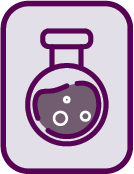
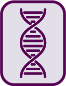
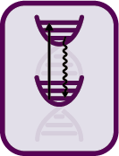

Publications
Journal articles, reviews and conference papers, newest first. For the full, up-to-date list see Google Scholar (opens in a new tab).
No publications match those filters.



Journal articles, reviews and conference papers, newest first. For the full, up-to-date list see Google Scholar (opens in a new tab).
No publications match those filters.